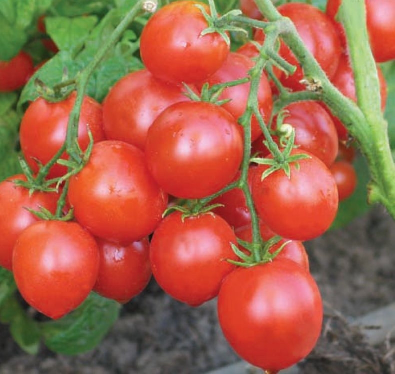

Спэлый памидорка!!!
 Сочный красный памидорка!
Можна в салат, можна есть так. Палэзна всэгда!
Саветую в салат с агурэц и лук, еще айран!
можна дабавить к яичница будет вай-вай-вай!
Самый лутший, самый спэлый! Стоит не дорага! Скитка сделаем. Многа витамин.
Кило 70 рублей!